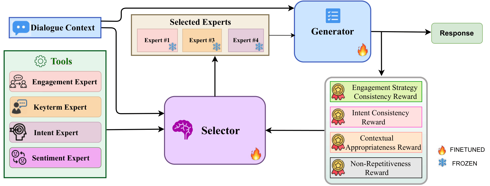
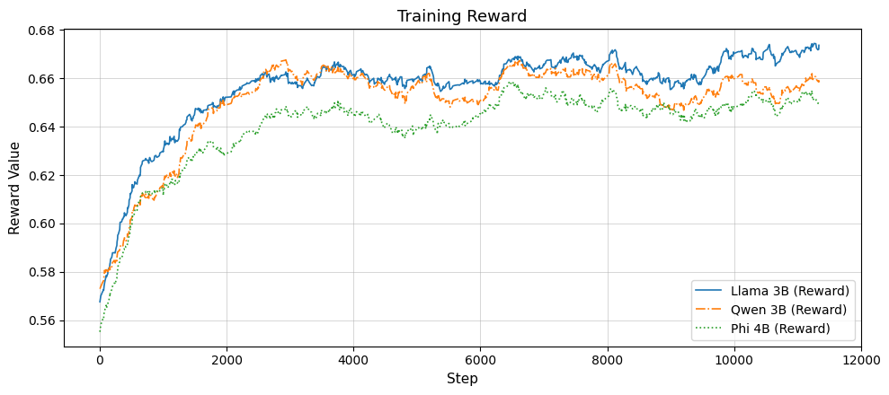
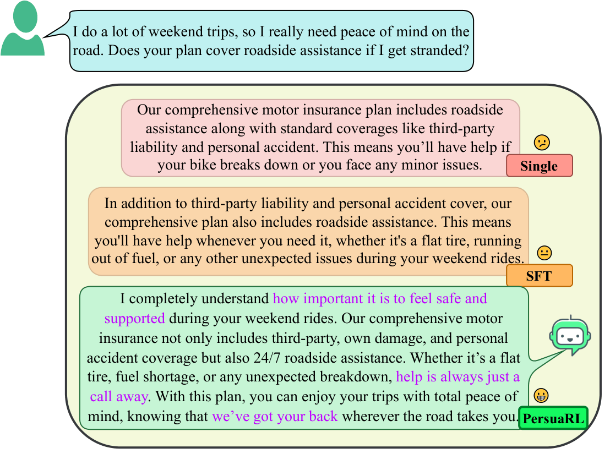

EMNLP Findings 2026•IIT Patna
PersuaRL: Reinforcement Learning-Driven Multi-Expert Selection for Persuasive Dialogue Generation in Insurance
1 Department of Computer Science and Engineering, Indian Institute of Technology Patna, India
2 Ramakrishna Mission Vivekananda Educational and Research Institute, India
3 Accenture Labs, Bangalore, India
* Corresponding author

Abstract
Large Language Models (LLMs) are revolutionizing digital communication by powering conversational agents deployed across domains such as customer service, digital sales, and insurance. These agents can understand user input, retrieve relevant information, and generate coherent responses. However, while they excel at factual communication, they often lack the ability to engage in truly persuasive, context-sensitive dialogue, especially in domains like insurance, where trust and clarity are critical. Building on this need within the insurance domain, our work focuses on improving the persuasiveness of digital agents. To support this, we introduce InsureDial, a Persuasive Insurance Dialogue dataset, designed to capture the nuances of persuasive communication specific to motor insurance interactions. We introduce PersuaRL, a reinforcement learning based framework that equips LLM-driven dialogue agents with the ability to adaptively explore, select, and coordinate strategies across multiple expert modules, guided by the evolving dialogue context, to achieve more effective persuasion. We conduct extensive automatic, human and qualitative evaluations on two benchmark persuasion dialogue datasets, including our InsureDial. Our evaluations consistently demonstrate that PersuaRL outperforms baselines, generating contextually appropriate and highly persuasive responses.
How PersuaRL Works
Prior tool-augmented and persuasive dialogue systems rely on static prompting, heuristic routing, or monolithic generation. PersuaRL instead reconceptualizes expert coordination as a context-conditioned decision problem: choosing the right combination of experts becomes a learnable action rather than a heuristic choice. PersuaRL is the first framework to learn expert selection policies for persuasion via reinforcement learning, letting the selector and generator co-adapt over multi-turn interactions rather than following a pre-specified routing rule.
Problem formulation
Given a dialogue context xt — the conversation history plus the current user utterance — the goal is to generate a persuasive response yt. A selector policy πθ emits a binary mask ot ∈ {0,1}n, where ot,i = 1 activates expert Ti. Each selected expert produces Oi = Ti(xt), which is packed with the dialogue context into an augmented prompt, and a generator Aφ produces the response. The dialogue context is the state and the expert-selection mask is the action. During training the history follows the gold dialogue, so the selection at turn t does not alter the context at turn t+1: the selector therefore solves a context-conditioned, single-step decision problem at every turn, with the reward computed on that turn's response.
1. Selector — GRPO over a combinatorial action space
Persuasive dialogue requires balancing competing objectives: engagement strategy, intent alignment, coherence, and diversity. Existing tool-use RL methods target factual tasks with objective correctness signals, whereas persuasion involves subjective, interacting rewards that demand a different optimization strategy. The selector is optimised with Group Relative Policy Optimization (GRPO): for each state, multiple expert selections are sampled from the previous policy and evaluated with a frozen generator, and the policy is updated using a clipped policy-gradient objective with KL regularization against a reference policy. This gives stable learning over the combinatorial expert-selection space.
2. Experts — four persuasion competencies
Persuasive communication requires knowing what the user wants, how they feel, what they are discussing, and how best to engage them. Each expert is a decoder-only transformer fine-tuned independently for one subtask:
- Engagement Expert — selects the persuasion strategy for the turn, over six labels: Logical Appeal, Credibility Appeal, Emotional Appeal, Personal Appeal, Persona Appeal, and Default.
- Intent Expert — classifies the user's goal over six intents: Request Quote, Ask Coverage Details, Express Concern, Request Additional Info, Confirm Interest, and Ask Price/Premium.
- Keyterm Expert — extracts domain-critical terms such as zero depreciation, roadside assistance, or no claim bonus, output as a structured keyphrase list.
- Sentiment Expert — detects emotional tone as Positive, Neutral, or Negative, trained with a cross-entropy classification loss.
3. Composite reward — five components
Persuasive effectiveness cannot be captured by a single metric: a response might be strategically appropriate but miss the user's intent, or address intent accurately while lacking emotional resonance. Prior work evaluates persuasion with post-hoc human judgments but does not use those dimensions during training. PersuaRL provides explicit training signal for five:
- R1 — Engagement Strategy Consistency. A fine-tuned BERT strategy classifier (82.1% accuracy on InsureDial) yields per-strategy prototype embeddings; the reward scores the response's cosine compatibility with the user's inferred strategy distribution.
- R2 — Intent Consistency. The same construction over a BERT intent classifier (84.9% accuracy) and six intent prototypes.
- R3 — Contextual Appropriateness. BERTScore-F1 against the full dialogue context and the current user utterance, with the latest user turn weighted double, then normalised and clipped to [0,1].
- R4 — Non-Repetitiveness. One minus the Jaccard overlap between the current response and the previous agent response, discouraging stagnant dialogue.
- R5 — Judge Reward. Prometheus-7B-v2.0 acting as an LLM judge, scoring persuasiveness, negotiation effectiveness, and user engagement.
The total reward is a convex combination of the five components. Weights were selected by held-out perplexity search, giving β = (0.15, 0.15, 0.20, 0.15, 0.35). Three auxiliary penalties shape selector behaviour: a complexity penalty (α = 0.025 per selected expert) discouraging over-selection, a route repetition penalty (β = 0.2, capped at 0.15) preventing policy collapse onto a single route, and a load balance penalty (γ = 0.4, capped at 0.15) keeping any one expert from dominating.
4. Training setup
All experiments ran on a single A100 80GB, roughly 25–28 hours per model, in PyTorch and Hugging Face. Decoding used nucleus sampling (T = 0.8, p = 0.9); training used AdamW at learning rate 2×10−5, clipping ε = 0.2, 15 epochs, seed 10. Inference used max_tokens = 512, T = 0.8, top-k = 40, top-p = 0.95.

InsureDial
No persuasive dialogue dataset existed for the motor insurance domain. InsureDial contains 1,931 multi-turn conversations and over 26,000 utterances between users and agents, covering real-world scenarios such as policy quotes, coverage details, and price inquiries, with rich domain terminology drawn from an analysis of leading motor insurance providers — discounts, value-added services, coverage types, and add-ons.
Construction
The corpus was built with a semi-automated, human-in-the-loop pipeline. Trained annotators first authored 50 seed dialogues, one playing the user and one the agent, deliberately covering the full range of persuasive intents; agent utterances were validated with domain experts. Five candidate prompts were then compared by generating 25 dialogues each with GPT-4o (T = 0.8, top-p = 0.95) and rating them on a three-point persuasive-quality scale, reaching substantial inter-annotator agreement (κ = 80.2%). The best-scoring prompt drove full-scale generation, followed by human review and filtering.
Annotation
Every dialogue is annotated along four dimensions: engagement strategy (six labels), user intent (six labels), sentiment (three labels), and key domain terms. Five trained annotators hand-labelled 75 gold dialogues, which seeded few-shot prompts for Gemini-2.0-Flash; a 30-dialogue pilot was fully human-reviewed before the remainder was annotated, with human verification kept in the loop throughout.
Table 1. InsureDial statistics. The corpus is split 80/5/15 with diversity maintained across splits.
| Metric | Train | Validation | Test |
|---|---|---|---|
| Number of dialogues | 1545 | 97 | 289 |
| Number of utterances | 21134 | 1462 | 4170 |
| Avg. utterances per dialogue | 6.84 | 7.54 | 7.21 |
| Avg. words per user utterance | 14.38 | 17.21 | 17.19 |
| Avg. words per agent utterance | 53.78 | 59.74 | 56.94 |
Results
We evaluate with BLEU-2 (B-2), METEOR (MT), BERT-F1 (BF1), DISTINCT-2 (D-2), ROUGE-1 (R1), and LLM-as-a-Judge (LLM-J), against closed-source and open-weight baselines in a single-shot setting plus a supervised fine-tuning baseline. PersuaRL is instantiated on Llama-3.2-3B-Instruct, Phi-3-mini, Qwen-2.5-3B-Instruct and Mistral-24B-Instruct, each evaluated under three regimes: single-shot, SFT, and PersuaRL.
Table 2. Automatic evaluation on InsureDial and the out-of-domain DEAL dataset. Best result within each model group in bold. Results are statistically significant at the 5% level by t-test. LLM-J is omitted for GPT models to avoid evaluation bias, since the judge is itself GPT-based.
| Model | B-2 ↑ | MT ↑ | BF1 ↑ | D-2 ↑ | R1 ↑ | LLM-J ↑ |
|---|---|---|---|---|---|---|
| InsureDial | ||||||
| GPT-5 | 0.036 | 0.093 | 0.828 | 0.982 | 0.232 | – |
| GPT-4.1 mini | 0.124 | 0.143 | 0.620 | 0.998 | 0.383 | – |
| DeepSeek R1 Distill Llama 70B | 0.069 | 0.125 | 0.569 | 0.920 | 0.260 | 4.25 |
| Llama 3.3 70B Instruct | 0.126 | 0.137 | 0.610 | 0.996 | 0.377 | 4.16 |
| Qwen 3 32B | 0.107 | 0.132 | 0.588 | 0.998 | 0.371 | 3.84 |
| Phi-3-Medium 14B | 0.169 | 0.167 | 0.655 | 0.995 | 0.441 | 3.78 |
| Qwen 2.5 7B Instruct | 0.124 | 0.145 | 0.604 | 0.958 | 0.385 | 3.66 |
| Llama 3.1 8B Instruct | 0.132 | 0.146 | 0.605 | 0.966 | 0.388 | 3.67 |
| Qwen 2.5 3B Instruct (Single) | 0.090 | 0.128 | 0.562 | 0.965 | 0.310 | 2.66 |
| Qwen 2.5 3B Instruct (SFT) | 0.305 | 0.217 | 0.727 | 0.991 | 0.556 | 3.28 |
| PersuaRL (Qwen 2.5 3B) | 0.375 | 0.250 | 0.760 | 0.991 | 0.609 | 3.81 |
| Llama 3.2 3B Instruct (Single) | 0.106 | 0.135 | 0.585 | 0.937 | 0.334 | 2.86 |
| Llama 3.2 3B Instruct (SFT) | 0.339 | 0.232 | 0.742 | 0.989 | 0.584 | 3.48 |
| PersuaRL (Llama 3.2 3B) | 0.398 | 0.276 | 0.771 | 0.989 | 0.631 | 3.95 |
| Phi 3 mini 128k (Single) | 0.181 | 0.156 | 0.641 | 0.980 | 0.429 | 2.79 |
| Phi 3 mini 128k (SFT) | 0.362 | 0.242 | 0.752 | 0.988 | 0.600 | 3.39 |
| PersuaRL (Phi 3 mini) | 0.374 | 0.261 | 0.762 | 0.990 | 0.611 | 3.86 |
| Mistral 24B Instruct (Single) | 0.043 | 0.094 | 0.772 | 0.898 | 0.195 | 3.02 |
| Mistral 24B Instruct (SFT) | 0.324 | 0.226 | 0.815 | 0.990 | 0.574 | 3.65 |
| PersuaRL (Mistral 24B) | 0.355 | 0.241 | 0.873 | 0.992 | 0.596 | 4.12 |
| DEAL — out-of-domain, tourism negotiation | ||||||
| Llama 3.2 3B Instruct (Single) | 0.049 | 0.085 | 0.519 | 0.937 | 0.195 | 2.41 |
| Llama 3.2 3B Instruct (SFT) | 0.080 | 0.104 | 0.552 | 0.986 | 0.267 | 2.64 |
| PersuaRL (Llama 3.2 3B) | 0.087 | 0.101 | 0.536 | 0.987 | 0.278 | 2.79 |
| Phi 3 mini 128k (Single) | 0.086 | 0.106 | 0.552 | 0.973 | 0.265 | 2.37 |
| Phi 3 mini 128k (SFT) | 0.089 | 0.110 | 0.558 | 0.984 | 0.273 | 2.56 |
| PersuaRL (Phi 3 mini) | 0.094 | 0.121 | 0.568 | 0.985 | 0.281 | 2.72 |
PersuaRL consistently outperforms all baselines on InsureDial. PersuaRL on Llama-3.2-3B reaches BF1 ≈ 0.771, B-2 ≈ 0.398 and R1 ≈ 0.631, beating much larger 14–70B baseline models: PersuaRL on Phi-3-mini exceeds Phi-3-Medium-14B by roughly 16% and Qwen-3-32B by over 23% in BERT-F1. SFT helps models adapt to the insurance domain but saturates at surface-level generation; PersuaRL consistently pushes past that plateau. On the out-of-domain DEAL negotiation benchmark, the Single → SFT → PersuaRL ordering holds for every backbone, suggesting the learned selector policies capture domain-agnostic persuasion patterns such as intent adaptation and strategic framing rather than dataset-specific heuristics.
Human evaluation
Annotators with insurance-dialogue expertise assessed 30% of a randomly sampled InsureDial test set across five dimensions on a 5-point scale: Fluency (F), Engagingness (E), Persuasive Effectiveness (PE), Strategy Appropriateness (SA), and Resistance Handling (RH). Fluency, Engagingness and Strategy Appropriateness are judged per turn; Persuasive Effectiveness and Resistance Handling are judged per dialogue.
Table 3. Human evaluation on InsureDial. The Single → SFT → PersuaRL trend holds consistently at 3B–24B scale.
| Model | F ↑ | E ↑ | PE ↑ | SA ↑ | RH ↑ |
|---|---|---|---|---|---|
| Llama 3.1 8B Instruct (Single) | 2.47 | 2.31 | 2.13 | 2.39 | 2.94 |
| Llama 3.1 8B Instruct (SFT) | 3.11 | 2.94 | 2.46 | 2.88 | 3.38 |
| PersuaRL (Llama 3.1 8B) | 4.12 | 4.51 | 4.36 | 4.29 | 4.46 |
| Qwen 2.5 3B Instruct (Single) | 2.69 | 2.45 | 2.29 | 2.68 | 3.10 |
| Qwen 2.5 3B Instruct (SFT) | 3.19 | 2.98 | 2.86 | 3.10 | 3.61 |
| PersuaRL (Qwen 2.5 3B) | 3.94 | 4.22 | 4.23 | 4.06 | 4.32 |
| Mistral 24B Instruct (Single) | 2.98 | 2.81 | 2.53 | 2.74 | 3.27 |
| Mistral 24B Instruct (SFT) | 3.23 | 3.34 | 3.10 | 3.19 | 3.76 |
| PersuaRL (Mistral 24B) | 4.26 | 4.39 | 4.54 | 4.33 | 4.45 |
Ablation Studies
Expert modules
Removing any expert degrades performance, confirming that each contributes meaningfully. Engagement and Intent have the most pronounced impact — excluding either causes notable drops in semantic alignment and relevance. The Keyterm and Sentiment experts matter less individually, but their removal still produces a measurable decline in overall quality.
Table 4. Expert-module ablation on the Qwen 2.5 3B backbone.
| Configuration | B-2 ↑ | MT ↑ | BF1 ↑ | D-2 ↑ | R1 ↑ |
|---|---|---|---|---|---|
| PersuaRL (full) | 0.375 | 0.250 | 0.760 | 0.991 | 0.609 |
| − Engagement Expert | 0.284 | 0.202 | 0.704 | 0.983 | 0.539 |
| − Intent Expert | 0.293 | 0.216 | 0.713 | 0.983 | 0.558 |
| − Keyterm Expert | 0.302 | 0.223 | 0.721 | 0.984 | 0.566 |
| − Sentiment Expert | 0.324 | 0.231 | 0.736 | 0.990 | 0.583 |
Reward components
R1 (Engagement), R2 (Intent) and R5 (Judge) are the most impactful, directly driving PersuaRL's persuasive and context-aware behaviour. R3 and R4 provide complementary benefits through contextual alignment and response diversity. Removing the full reward set collapses performance toward the SFT level.
Table 5. Reward ablation on the Qwen 2.5 3B backbone.
| Configuration | B-2 ↑ | MT ↑ | BF1 ↑ | D-2 ↑ | R1 ↑ |
|---|---|---|---|---|---|
| PersuaRL (full) | 0.375 | 0.250 | 0.760 | 0.991 | 0.609 |
| − R1 (Engagement Strategy Consistency) | 0.341 | 0.214 | 0.694 | 0.965 | 0.521 |
| − R2 (Intent Consistency) | 0.349 | 0.220 | 0.706 | 0.969 | 0.536 |
| − R3 (Contextual Appropriateness) | 0.351 | 0.229 | 0.721 | 0.985 | 0.563 |
| − R4 (Non-Repetitiveness) | 0.357 | 0.234 | 0.729 | 0.989 | 0.571 |
| − R5 (Judge) | 0.342 | 0.219 | 0.701 | 0.966 | 0.529 |
| − (R1 + R2) | 0.335 | 0.211 | 0.691 | 0.961 | 0.511 |
| − all rewards | 0.323 | 0.205 | 0.684 | 0.948 | 0.501 |
Does the selector earn its keep?
We compare three routing regimes: AllExpert (every expert always active), Prompting (the LLM is prompted to choose tools), and PersuaRL (reward-driven selection). PersuaRL wins on every metric and both backbones. AllExpert performs reasonably but suffers from unnecessary activations that introduce noise and reduce generation precision; prompting alone cannot capture dynamic, context-sensitive tool usage. The gap is largest on ROUGE-1 — 0.631 for PersuaRL on Llama-3B against 0.572 for prompting — reflecting better content alignment with no loss of output diversity.

Qualitative Analysis
Two differences separate PersuaRL from the single-shot and SFT variants. First, PersuaRL responses are more empathetic and user-centric, opening by acknowledging the user's situation before presenting coverage; SFT responses are informative but neutral, listing features without user-centric framing. Second, PersuaRL shows greater fluency and structure, weaving technical coverage details together with contextual reassurance rather than enumerating them. Single-shot and SFT achieve factual completeness but miss the emotional framing that drives persuasion.

Ethical Considerations
This work treats persuasion as decision support rather than decision enforcement. User autonomy is preserved: responses align with user intent, sentiment and context without applying coercive or repetitive pressure. Because inaccuracies in the insurance domain can cause financial harm, particular care was taken with factual accuracy. InsureDial was developed with a human-in-the-loop process, with domain experts validating seed dialogues and annotators verifying model-generated conversations, and with strategies and intents explicitly annotated to support context-aware persuasion across multi-turn interactions. Annotators were compensated at $10/hour for utterance authoring and $5/hour for verification.
Limitations
- InsureDial is built with a semi-automated pipeline in which GPT-4o generates dialogues later filtered by humans; this may introduce synthetic artifacts and may not fully capture real user behaviour.
- The expert-selection policy operates over a binary mask, so the action space grows exponentially with the number of experts, which can hinder scalability despite GRPO's stabilizing effect.
- Invoking multiple experts per turn increases inference latency, computational cost and system complexity — roughly 1.4× the inference time of the SFT baseline.
- Compute constraints limited evaluation to smaller open-weight backbones; applying the full framework with large-scale LLMs as both selector and generator remains future work.
Citation
@inproceedings{persuarl2026,
title = {PersuaRL: Reinforcement Learning-Driven Multi-Expert Selection for
Persuasive Dialogue Generation in Insurance},
author = {Kirti, Rohan and Ghosh, Akash and Vats, Aryan and Ghosh, Niladri and
Shriparn, Shipra and Saha, Sriparna and Ramnani, Roshni and
Maitra, Anutosh},
booktitle = {Findings of the Association for Computational Linguistics:
EMNLP 2026},
year = {2026},
publisher = {Association for Computational Linguistics},
url = {PAPER_URL}
}